Planaria：模式导向的跨页复合预取器
手机SoC中位于内存侧的系统缓存（SC）因工作集大、访问模式不规则、内存侧无法获取PC且受严格功耗约束，现有预取器SPP/BOP在SC上AMAT仅降低10.8%/3.3%，且带来15.9%/23.4%的额外内存流量。论文基于真实手机内存trace分析，识别出SC层的页内规律（footprint snapshot稳定复现）与页间规律（地址相近页的bitmap模式相似），提出复合硬件预取器Planaria：SLP以页号为签名记录页内bitmap快照并预取其余块，TLP通过页号距离与bitmap差异双重阈值借用相邻页模式做迁移学习式预取，协调器将学习与发射两阶段解耦为'并行训练、串行发射'。评估采用'真实设备采集trace+修改版DRAMSim2仿真+Verilog RTL综合'闭环，IPC较无预取器/BOP/SPP平均提升28.9%/21.9%/15.3%，功耗仅增0.5%，存储开销345.2KB（4MB SC的8.4%），其workload-driven建模与PPA权衡方法对团队内存IP架构工作有直接参考价值。
内存侧系统缓存（SC）是手机中所有CPU与GPU共享的末级缓存，工作集大、访问模式高度不规则；高层缓存已过滤掉大量时空局部性，且内存侧无法获得PC、手机功耗约束严格，导致依赖delta序列或PC签名的现有预取器（SPP、BOP）在SC上命中率低、预测困难，并产生高额额外内存流量与功耗；同时更换替换策略或增大缓存容量对SC性能提升有限。
提出由两个子预取器和一个协调器构成的复合预取器Planaria。SLP利用页内规律：以页号（PN）为签名（规避内存侧获取PC的代价），用16-bit bitmap记录footprint snapshot，经FT过滤（记录3个offset后升级）、AT累积、超时机制判定快照完整稳定后转入PT（Pattern History Table），demand miss时预取快照中其余块。TLP利用页间规律：通过128项RPT中的Ref字段判定页号差在阈值内（如64）的相邻页，且bitmap差异小于阈值（如4 bit）时借用邻居页模式，对已学习模式中尚未访问的块发起预取。协调器将各子预取器的学习阶段（全并行观察完整访问序列）与发射阶段（SLP优先、TLP兜底的串行选择规则）显式解耦，实现'parallel training and serial issuing'，兼顾精度与覆盖率。
IPC较无预取器、BOP、SPP平均提升28.9%、21.9%、15.3%
AMAT较无预取器、BOP、SPP分别降低24.3%、21.3%、15.1%
平均额外功耗仅0.5%，而BOP、SPP分别增加13.5%、9.7%；单应用内存系统功耗增幅0.2%~2.8%，对HI3和PM甚至分别降低3.3%和1.2%
存储开销345.2KB，仅为4MB SC容量的8.4%
基线对比：SPP和BOP在SC上AMAT仅降低10.8%和3.3%，且分别带来15.9%和23.4%的额外内存流量
footprint snapshot跨程序阶段的平均重叠率超过80%；距离阈值设为4（或64）时，平均26.95%（39.26%）的内存页具有可学习邻居
性能分解：SLP贡献约80%的整体提升；TLP对CFM、QSM、HI3、KO、NBA2贡献有限，对Fort贡献最大
与依赖delta序列或PC签名的既有预取器不同，SLP以页号为签名利用SC层主导的空间局部性（footprint snapshot），规避内存侧获取PC的高昂代价；与既有跨页预取器依赖小规模全局历史表（易误预测、污染缓存）不同，TLP对页间预取施加双重限制（页号距离阈值+bitmap差异阈值）以提升精度；协调机制上不同于串行（TPC）或并行（ISB/MISB）协调器，提出将学习与发射阶段解耦的'并行训练、串行发射'框架，同时获得高精度与高覆盖率。
相关度级别：high
命中能力域：2.1 IP 架构与微架构 | 2.2 RTL 设计与实现
理由：直接命中2.1：论文是典型的内存子系统（系统缓存）模块级微架构设计，在手机严格功耗约束下做PPA权衡（功耗仅+0.5%、存储345.2KB），并采用'真实设备采集trace+trace驱动仿真（含LPDDR芯片模型的DRAMSim2）+RTL综合评估'的workload-driven性能建模闭环，与团队内存IP（LPDDR/DDR5/HBM4）的架构定义与性能建模方法高度同源；论文还用Verilog实现并综合了baseline与Planaria以估算面积开销，涉及2.2的RTL实现与综合流程。预取/缓存管理逻辑是内存控制器与互连IP（含SLC类模块）中可复用的模块级设计点，其低存储表项结构（FT/AT/PT/RPT）与'学习/发射解耦'的多引擎协调框架对团队IP架构有直接借鉴价值。
建议动作：深入精读并做内部分享
Yuhang Liu，Mingyu Chen 中国科学院计算技术研究所，处理器芯片全国重点实验室，中国北京
设计者。原因在于，高层缓存已经过滤掉了大量空间局部性和时间局部性，留给 SC 可利用的机会很少。因此，高度不规则的访问模式导致 SC 命中率低下，并使预取器对未来访问地址的预测变得复杂。为了验证这一分析，我们评估了最先进的预取器 SPP [6
鉴于内存墙的存在，存储系统的性能显著影响手机的用户体验。系统缓存（SC）位于存储器一侧，由手机内的所有 CPU 和 GPU 共享，是在诉诸耗时的片外存储器访问之前的最后一道防线。由于其庞大的工作集和不规则的访问模式，管理 SC 是一项挑战。尽管占用了可观的片上面积，SC 在命中率方面的效果却相对较低。据观察，无论是最先进的缓存替换策略，还是增加缓存容量，都无法显著提升 SC 的性能。为高层缓存设计的预取器无法无缝地应用于 SC，原因在于存储器一侧缺少所需的程序计数器（PC），且激进的预取流量会违反手机严格的功耗约束。
在本研究中，我们提出了 Planaria，它由两个子预取器（SLP 和 TLP）和一个协调器组成，旨在同时实现高准确率和高覆盖率。这两个子预取器分别通过自学习和迁移学习来利用页内和页间的规律性。协调器显式地将子预取器的学习阶段与发出阶段解耦。实验结果表明，与无预取器、BOP 和 SPP 相比，Planaria 在每周期指令数（IPC）方面分别平均提升整体系统性能 28.9%、21.9% 和 15.3%。此外，Planaria 被证明是功耗高效的，仅带来 0.5% 的功耗增加，而 BOP 和 SPP 则分别使功耗增加 13.5% 和 9.7%。
随着手机应用程序日益呈现内存密集型特征，内存系统的效率显著影响手机系统的整体性能，进而影响其用户体验。与台式机和服务器相比，手机表现出明显更高的平均内存访问时间（AMAT），这主要是由于其出于节能考虑而采用低功耗 DDR（LPDDR）内存 [4]。
作为存储层次结构中最低一级的缓存，系统缓存（SC）是在不得不求助于耗时的片外内存访问之前的最后一道防线。它在降低内存访问延迟和功耗方面发挥着至关重要的作用。然而，SC 的现有性能远低于
特此允许免费制作本作品部分或全部内容的数字或硬拷贝以供个人或课堂使用，前提是这些拷贝并非以营利或获取商业利益为目的而制作或分发，并且这些拷贝在首页带有本声明和完整的引用信息。本作品中第三方组件的版权必须得到尊重。对于所有其他用途，请联系所有者/作者。
提供了实验设置的详细信息。第 6 节给出评估结果与分析。第 7 节概述相关工作。最后，第 8 节总结我们的研究。
Planaria 有两个关键组件，包括两个子预取器（即自学习导向预取器（Self-Learning directed Prefetcher，SLP）和迁移学习导向预取器（Transfer Learning directed Prefetcher，TLP））。SLP 利用页内空间局部性，将在第 3 节中介绍。TLP 利用相邻内存页访问模式的相似性，将在第 4 节中介绍。
图 1 展示了 Planaria 的结构与操作。Planaria 以按需请求（demand request）作为输入、以预取请求作为输出进行工作。首先，Planaria 将当前按需请求的地址和到达时间传递给每个子预取器，并启动它们的学习阶段。其次，学习阶段学习内存访问模式，并将元数据（meta-data）传递给发射阶段。元数据包含页号以及位图模式（bitmap-pattern），该位图模式表示在该内存页中哪些块应当被预取。Planaria 通过特定规则仅选择一个子预取器来启用其发射阶段。该选择规则优先启用 SLP 的发射阶段，仅当 SLP 没有历史信息来支持生成预取请求时，才启用 TLP 的发射阶段。被选中的子预取器执行其发射阶段以计算预取地址。最后，生成的预取请求被插入预取队列中。
Planaria 的协调框架汲取了先前协调机制的优点，并克服了其缺点。先前的方案 [3, 5, 7, 11] 集成了不同的子预取器，其中每个子预取器都是单体式的。这种单体式结构意味着每个子预取器的学习阶段与发射阶段是不可分割的。我们设计的一个关键洞察在于：每个子预取器的学习阶段和发射阶段需要被解耦并分别管理。在学习阶段，每个子预取器从所有内存访问中学习访问模式，并提供用于计算预取地址的元数据。在发射阶段，每个子预取器根据学习阶段传递来的元数据生成预取请求。具体而言，所有子预取器的学习阶段应当被同时启用，使每个子预取器都能观察到完整的内存访问序列，从而实现全模式导向（full-pattern directed）。相反，子预取器的发射阶段则被选择性地启用，以平衡预取准确率与覆盖率。
观察 1：对于系统缓存层级的页内内存访问模式，空间局部性比时间局部性更为显著。
图2展示了页内访问模式的特征。X轴表示各访问的到达时间（周期），Y轴为内存页中的块编号，当页大小为4KB、块大小为64B时，块编号范围为0到63。如图2所示，我们可以得到以下特征。
➊ 在一个短暂的时间间隔内，内存页中的若干不同块被访问，凸显出独特的空间局部性。如果将这些被访问的块视为一个快照（snapshot），则该快照的组成与结构是稳定的。这一稳定性将由图4所介绍的实验加以验证。➋ 这些快照的重用距离通常较长，表明时间局部性有限。➌ 这些块的访问顺序是非确定性的，从而导致高度不可预测的增量（delta）序列。
根据观察1，我们提出了一种页内预取器：SLP（Self-Learning directed Prefetcher 的缩写），以利用页内模式的空间局部性。SLP 记录最近被访问的内存页的足迹快照（footprint snapshot），并且每当快照中的任意块被访问时，便预取该足迹快照中的所有其他块。
与以往研究 [1, 16] 将位图模式映射到由程序计数器（PC）和触发访问组成的签名不同，SLP 利用页号（PN）作为签名来索引足迹快照。这一设计的动机在于：在存储层次结构的低层获取 PC 的代价高昂，且在异构计算机系统中难以从众多设备中区分不同的 PC。虽然仅使用 PN 作为签名，在程序阶段切换期间内存页的访问模式频繁变化时，可能会降低预取准确性，但我们的定量实验表明足迹快照的变化极小；也就是说，快照的组成与结构保持稳定。
我们开展了一项实验，以定量验证不同程序阶段之间足迹快照的相似性。实验方法如图3所示。首先，我们通过统计一个页中被访问块的数量来确定窗口大小。随后，对于每个页，我们记录一个窗口内被访问的块，并将其与前一个窗口中被访问的块进行比较。我们采用重叠率（overlap rate）作为度量两个时间窗口之间相似性的指标。该比率的计算方式为：将当前窗口与前一个窗口中均被访问的块数量，除以当前窗口中被访问块的总数。我们分析了所有目标应用的内存访问轨迹（memory trace），并计算了所有页的窗口平均重叠率。结果如图4所示。这些应用的平均重叠率超过80%。作为一项定性实验，这些结果足以支持如下结论：在程序阶段切换期间，快照的变化是有限的。因此，使用页号作为足迹快照的签名是可行且准确的。
图1展示了自学习预取器（SLP）的结构与工作方式，其中页号（PN）被用作各个表的索引。DRAM包含四个通道，每个通道各有一个对应的SC。一个4KB的内存页被划分为四个段（segment），每段由16个块组成，并且每个段被静态映射到特定的DRAM通道。因此，每个通道中SC的预取器利用一个16位的位图模式（bitmap pattern）来跟踪对应的块是否已被访问。SLP使用最后访问时间字段和超时机制来逐出过期的表项。当需求访问到达时，累积表（AT）会检查同一页中是否有一些块已被访问（步骤➊）。如果AT未能找到匹配的表项，该请求将被插入过滤表（FT）（步骤➋）。FT负责过滤那些包含块数过少的快照。一旦某个FT表项记录了三个偏移量（即三个需求请求），该请求随后便被插入AT（步骤➌）。当某个AT表项因超时而被逐出时，SLP将此解释为检测到一个完整且稳定的快照，并将所记录的位图模式转移到模式历史表（Pattern History Table）
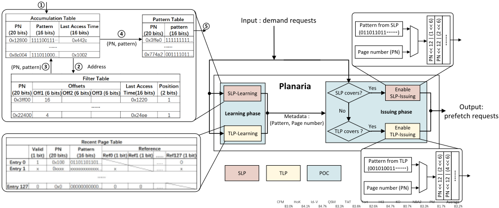
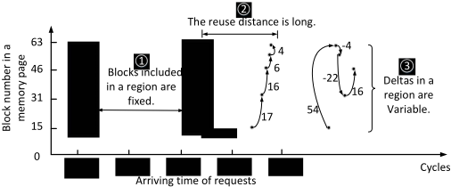
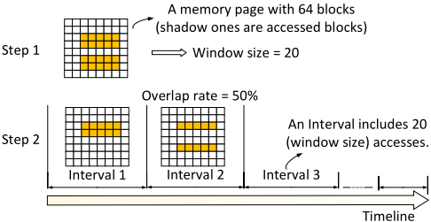
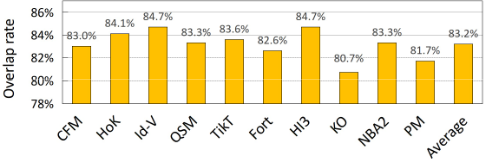
（PT）（步骤➍）。基于PT，如果需求请求发生缓存缺失（cache miss），则会生成预取请求（步骤➎）。
观察2：相当大比例的内存页能够在系统缓存级别上从其相邻页学习内存访问模式。
我们进行了一项实验来定量验证观察2。首先，我们为每个内存页用位图表示其访问模式，使用'1'和'0'来表示页中某一给定块是否已被访问过。随后，如果两个页的位图之间的差异很小（例如，低于某一阈值，即4位），并且这两个页在地址空间中彼此接近（即页号之差低于距离阈值），则这两个页将被视为可学习的邻居。图5描绘了在不同距离阈值下表现出这种邻居特性的内存页所占的比例。结果表明，当距离阈值设为4（或64）时，平均有26.95%（或39.26%）的内存页具有邻居特性。
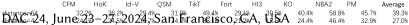
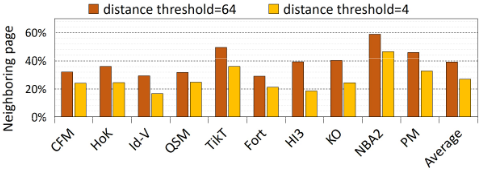
Toexploit the inter-page regularity, we design an inter-page prefetcher: TLP (an acronym for Transfer-Learning directed Prefetcher) based on observation 2. Figure 6 illustrates the fundamental concept of TLP. Memory page A does not have self-learned metadata to generate prefetch requests due to the lack of the history information. Instead, it has two candidate neighboring pages to learn from: page B and C, because the difference of their page numbers is under the threshold (i.e., 64). The common pattern of page A and B involves 6 blocks, whereas the common pattern of page A and C involves 3 blocks. Therefore, page B, rather than C, exhibits greater similarity to page A in terms of memory access patterns. Thus, page A utilizes the pattern learned from page B to generate prefetches. On page A, the blocks indicated by the learned pattern but not yet accessed will be prefetched.
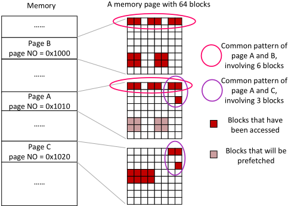
As shown in Figure 1, the major component of TLP is the Recent Page Table (RPT) which has 128 entries. RPT is indexed by page number and each entry contains a 16-bit bitmap to record whether the blocks have been accessed recently. To effectively check whether a page can refer to another page, 128 1-bit 'Ref' fields are allocated in each entry. If the difference between the page number of entry i and entry j is larger than a threshold, the j th 'Ref' in entry i and the i th 'Ref' in entry j are set as '1'; otherwise '0'. If the size of RPT is N , then each entry will have N-1 useful 'Ref' items, because referring to a page itself is meaningless.
| Memory trace-generating system configurations | Memory trace-generating system configurations | Memory trace-generating system configurations |
|---|---|---|
| Mobile phone | CPUs | 8 cores, ARM 2 Cortex-A76, 2.6 GHz, 512KB L2 2 Cortex-A76, 1.92 GHz, 512KB L2 4 Cortex-A55, 1.8 GHz, 128KB L2 Three-level caches, 4MB L3, with CPU-side hardware prefetchers |
| Mobile phone | GPUs | ARM Mali-G76MP10, 720 MHz, Two-level caches |
| Mobile phone | Others | NPU, ISP, DSP |
| Mobile phone | Process | 7nm |
| Memory system configurations | Memory system configurations | Memory system configurations |
| Simulator | System Cache DRAM | 4 MB, 16-way per set 64B per cache block 4 channels, 1 rank per channel, 8 banks per channel, LPDDR 4 tRAS=51, tRCD=16, tRRD=12, tRC=76, tRP=16, tCCD=8, tRTP=9, tWTR=12, tWR=22, tRTRS=2, tRFC=216, tFAW=48, tCKE=9, tXP=9, tCMD=1, Burst Length=16, DDR Frequency=1.2GHz, FR-FCFS |
| Memory trace-generating system configurations | Memory trace-generating system configurations | Memory trace-generating system configurations |
Figure 1 illustrates the structure and operation of TLP. Initially, RPT is empty. When page 0 x 100 is accessed, TLP allocates a new entry (entry 0) in RPT. As other RPT entries are invalid at present, all 'Ref' fields in entry 0 are set as '0'. Then, page 0 x 110 is accessed. TLP allocates a new entry (entry 2) and sets Ref0 as '1' because page 0 x 100 and page 0 x 110 are neighboring pages in space. After several memory accesses, page 0 x 110 is accessed again. TLP finds the Ref0 of entry 2 is '1' and the bitmaps of entry 0 and entry 2 have four same bits. In this case, TLP predicts that page 0 x 100 and page 0 x 110 have a similar memory accessing pattern. Comparing the bitmaps of entry 0 and entry 2, if a bit in entry 0 is '1' but in entry 2 is '0', TLP will prefetch the block on page 0 x 110.
表1展示了基线系统的架构参数。相比全系统仿真，我们更倾向于采用“实际运行采集真实踪迹 + 踪迹驱动仿真 + RTL 性能评估”的方式。表2展示了目标应用程序，这些应用运行在手机上，并位列某一地区的前十榜单 [9, 10]。我们修改了 DRAMSim2 [12] 来评估不同的候选架构，包括 LPDDR 芯片。DRAMSim2 以内存踪迹作为输入，模拟处理这些内存请求的过程，并输出性能统计信息。我们使用 Verilog 实现并综合了基线系统和 Planaria，以进一步评估整体性能并估算面积开销。
我们实现了一个硬件模块，用于监测手机内部的内存总线，以记录内存访问踪迹。每条踪迹记录包括物理访问地址、访问类型（即读或写）、请求设备 ID（即 CPU、GPU、DSP 等）以及访问到达时间。这些内存踪迹是真实手机的实测记录，能够准确反映深层存储层次结构、复杂软件栈以及用户活动对内存访问的影响。手机制造商提供的功耗模型被嵌入到我们的仿真器中。
| Workloads | Description | Length (M) | Abbr. |
|---|---|---|---|
| Cross Fire Mobile | First-person shooter | 67.48 | CFM |
| Honor of Kings | Multiplayer MOBA | 71.37 | HoK |
| Identity V | Asymmetric battle arena | 68.27 | Id-V |
| QQ Speed Mobile | 3D racing mobile game | 69.45 | QSM |
| TikTok | Short video sharing app | 70.82 | TikT |
| Fortnite | Multiplayer battle royale | 66.71 | Fort |
| Honkai Impact 3 | 3D action game | 67.65 | HI3 |
| Knives Out | Multiplayer battle royale | 68 | KO |
| NBA 2K19 | Basketball game | 67.71 | NBA2 |
| PUBG Mobile | Multiplayer battle royale | 67.71 | PM |
| Workloads | Description | Length (M) | Abbr. |
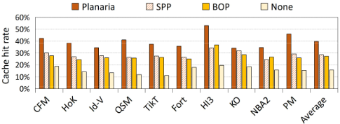
本节展示并分析实验结果。
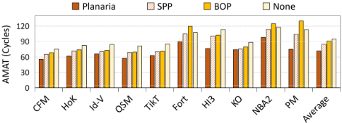
图 7 和图 8 分别从 AMAT 和 SC 命中率两个角度展示了目标应用的性能提升。与无预取器、BOP 和 SPP 相比，Planaria 分别将 AMAT 降低了 24.3%、21.3% 和 15.1%。在大多数情况下，缓存命中率的提升对应着平均内存访问时间（AMAT）的下降。然而，对于应用 Fort、NBA2 和 PM，与没有预取器的情形相比，使用 BOP 虽然提高了缓存命中率，却使 AMAT 有所升高。我们评估了单次访问中各阶段所耗费的时间，发现 BOP 在 Fort、NBA2 和 PM 场景下表现欠佳的原因在于其生成了大量多余的预取，从而导致内存流量大幅增加。相反，Planaria 在不引入太多额外内存流量的情况下提高了缓存命中率，这表明其具有更高的准确性。
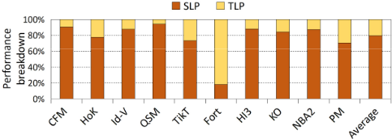
图 9 展示了 Planaria 性能提升的分解情况。SLP 贡献了总体提升的近 80%。对于应用 CFM、QSM、HI3、KO 和 NBA2，TLP 的作用有限。CFM、QSM、HI3、KO 和 NBA2 中存在的模式正是 SLP 所擅长的。TLP 在这些应用上受限的原因在于缺乏发出预取的机会。尤其是，Fort 的性能提升大部分由 TLP 贡献。当 SLP 频繁无法发出预取时，作为低优先级子预取器的 TLP 便获得了发出预取的机会。也就是说，此时 TLP 对整体提升的贡献更大。
Planaria 仅带来平均 0.5% 的额外功耗，而 BOP 和 SPP 则分别导致 13.5% 和 9.7% 的额外功耗。对于每个应用，图 10 展示了 SC 采用不同预取器时内存系统的功耗。Planaria 使内存系统的功耗增加了 0.2% 至 2.8%。对于应用 HI3 和 PM，Planaria 甚至分别将内存系统的功耗降低了 3.3% 和 1.2%。Planaria 的存储开销为 345.2KB，仅为 4MB SC 容量的 8.4%。
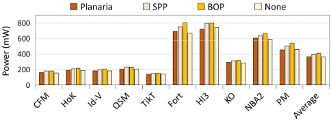
我们分别对 Planaria 三个组成部分的相关工作进行综述。页内预取器可分为基于增量（delta）的预取器、空间预取器和内容导向预取器。基于增量的预取器 [6, 8, 15] 学习增量历史的模式以预测未来的增量，并将当前访问地址与增量相加来计算预取地址。由于更高层级缓存的过滤效应以及核心与缓存/存储器子系统中的乱序调度，在 SC 上难以检测到规则的增量序列。第 6 节已验证，典型的基于增量的预取器在 SC 上难以取得良好效果。
空间预取器通过在线剖析 [1, 16]、离线剖析 [17] 或编译器提示 [18] 来利用空间局部性。空间预取器主要依赖程序计数器（PC）来挖掘指令流与数据流之间的关联。然而，将 PC 从多个核心传递到低层级缓存的代价十分高昂 [13]。为解决这一问题，我们提出了一种无需 PC 的实用预取器（即 SLP）。
内容导向预取器 [2, 20] 追踪“数据流”与“地址流”之间的微妙关系，而这种关系的完整性已被高层缓存的过滤效应所削弱。由于难以检测 SC 的间接访问模式，我们无法将内容导向预取器应用于 SC。
现有的页间预取器 [6, 14] 试图在新的内存页中启动预取，而无需重新学习任何增量历史模式或进行任何其他预热。然而，基于由所有页面共享的小型全局历史表进行预测会引发大量误预测，这无法被手机严格的功耗约束所容忍，同时还会造成缓存污染。为提高预取准确性，我们的研究对页间预取提出了更多限制条件，即比较两个页面之间页号与位图模式的差异。我们的方案与先前研究的另一个区别在于：我们的方案侧重于学习内存页的空间位图模式而非基于增量的模式，然后有条件地将其应用于另一个页面。
The coordinator of existing hybrid prefetchers can be divided into two categories: serial coordinators and parallel coordinators. Serial coordinators enable the sub-prefetchers in priority order. TPC [7] includes three sub-prefetchers and assumes that each subprefetcher can recognize the boundary of its expertise. Thus, the serial coordinator of TPC is a hardwired decision logic that enables each sub-prefetcher in turn. Parallel coordinators enable all the sub-prefetchers in parallel. ISB [5] and MISB [19] combine an irregular prefetcher with a regular prefetcher, enabling the irregular prefetcher and regular prefetcher simultaneously to improve the prefetch coverage. Our coordinator is different from the serial or parallel coordinators, but harvests their benefits through 'parallel training and serial issuing'. It explicitly decouples the learning and issuing phases of the sub-prefetchers and manages them separately to improve the accuracy and coverage simultaneously.
硬件预取是优化存储器系统性能的一项关键技术，对整个计算机系统的效率有着显著影响。然而，考虑到目标应用的特定特征、体系结构特性以及手机严苛的功耗约束，设计一款同时实现高性能与高能效的硬件预取器是一项挑战。为应对这一挑战，我们利用了以下洞察：系统缓存（SC）的主导规律性表现为空间局部性而非时间局部性。此外，在目标应用中，就空间局部性而言，页内规律性与页间规律性均存在。我们设计了两个子预取器，分别利用自学习与迁移学习来挖掘页内与页间规律性。进一步地，我们将预取解耦为“学习阶段与发射阶段”，并引入一个协调器来无缝集成这两个子预取器。